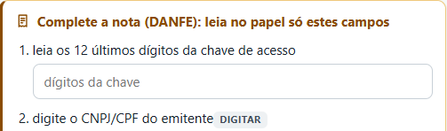
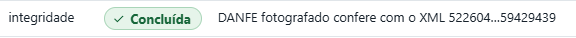
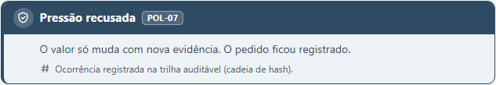
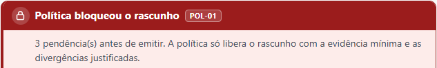
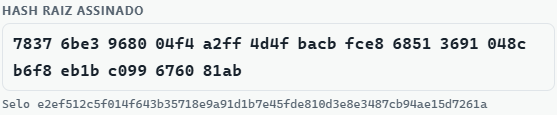

Quem prova cada operação fiscalizada?
Desde 01/03/2026, a cooperativa prova ao Banco Central cada operação de crédito rural que fiscaliza.
A norma está em vigor
Res. CMN 5.267 (MCR 2-7): a instituição financeira fiscaliza, paga e responde pela fiscalização, e a documentação fica à disposição do BCB.
Prova sem trilha já virou passivo
JF de Rio Verde/GO: cobrança suspensa porque o banco não exibiu a trilha da fiscalização (liminar noticiada em 07/10/2026).
O satélite não fecha a prova
O satélite pode contar cabeças, mas não prova que são as financiadas nem confere a nota fiscal e a GTA.
O que o regulador e o auditor escreveram, e o que os microdados do BCB mostram
Satélite inconclusivo não dispensa a fiscalização presencial nem a documental.
Voto 166/2025-BCB, 12/11/2025
A fiscalização do crédito rural é manual, amostral e de baixa cobertura.
TCU/Panoptes com o Lapig-UFG, relatório técnico, jul/2026
Arquivo sicor_desclassificacao.gz do BCB, versão de
14/10/2026; conta em
bench/desclassificacao/.
A IA lê o papel e a fala; as regras, sem IA, decidem; o humano assina.
Lê a nota impressa e pede só o que faltou
A fiscal fotografa o DANFE; o que não validou, ela lê no papel. O XML, quando chega, confere com a foto.


Recusa a pressão e registra
O produtor pede para marcar o número financiado: sem nova evidência, o valor não muda.

Bloqueia o laudo com pendência
O rascunho só sai quando cada item tem prova ou justificativa da fiscal.

Só a fiscal assina
Confere o hash e assina com PIN; cada item do laudo abre a sua prova.

Avaliado antes de chegar aqui
Teste congelado: n = 24 fiscalizações sintéticas
Papel fotografado e fala livre, sintéticos: A/B v2 no teste, fiscal simulado, n = 24
| Agente | Formulário | |
|---|---|---|
| Conteúdo conciliado igual à referência McNemar p = 0,51 | 71% [51–85%] | 58% [39–76%] |
| Sem a menção a item não financiado, que o formulário não registra McNemar p = 0,69 | 79% [60–91%] | 88% [69–96%] |
| O ganho: digitação (tempo modelado) 12 × 304 toques | 34,5 s | 215 s |
A IA lê o papel e a fala, o que um formulário não consegue; as regras, sem IA, garantem o que é aceito; o humano assina.
O que o satélite não vê, nós provamos
| Quem | O que faz bem | Onde o Laudo Vivo entra |
|---|---|---|
| Audsat | conta gado por imagem de satélite e gera o alerta remoto | consome o alerta inconclusivo e fecha a prova no chão, item a item |
| Softfocus | valida a nota fiscal e liga a instituição ao técnico | integra: o laudo e o pacote de exibição entram no fluxo dela |
| Olho do Dono | conta por câmera 3D e cruza com a GTA, em confinamento e frigorífico | laudo do MCR 2-7 para a instituição, só com o celular; a contagem deles vira evidência |
| Credenciada com prancheta | visita presencial e laudo em papel | visita só onde há divergência; cada item do laudo aponta para a sua prova |
A camada de prova do MCR 2-7 para o que o satélite não fecha: do lado da instituição financeira, item a item, com abstenção, recusa de pressão, assinatura humana e pacote de exibição.
Equipe
[[EQUIPE: nome]]
[[EQUIPE: papel e domínio, em uma linha]]
[[EQUIPE: nome]]
[[EQUIPE: papel e domínio, em uma linha]]
[[EQUIPE: nome]]
[[EQUIPE: papel e domínio, em uma linha]]
Domínio: [[EQUIPE: agrônomo com ART, nome e CREA]] validando as regras.
Jornada: [[EQUIPE: AVA x de 8 módulos · relatórios x de x no prazo · N commits]]
⚠ PREENCHER (equipe): como preencher este slide
- Troque cada
[[EQUIPE: …]]por dado verdadeiro dedocs/EQUIPE.md, só com a autorização de cada pessoa para nome e foto. - Fotos em
docs/entregaveis/deck/img/(ex.:equipe-nome.jpg) no lugar do círculo; acrescente ou apague cartões. - Sem agrônomo parceiro confirmado, apague a linha “Domínio”. Sem prova da jornada, apague a linha “Jornada”.
- Apague esta caixa e o selo ⚠ e gere o PDF de novo:
node scripts/gerar_pdf.cjs.
Nunca leia um marcador em voz alta: sem o dado, vale a frase alternativa do pitch.
Laudo Vivo: a prova do crédito rural, do satélite ao curral
A cooperativa de crédito, que a norma obriga a fiscalizar e que responde pela fiscalização; a credenciada que fiscaliza por ela paga licença por fiscal.
Por fiscalização concluída, a preço-alvo ainda não testado com cliente; a visita presencial fica só para onde há divergência.
Medido no trace da demo: R$ 0,0035 de energia local, ou R$ 0,04 a R$ 0,28 se fosse em nuvem. O que pesa é a revisão humana.
O MCR 2-7 veda fornecedor contratado pelo mutuário: trabalhamos só para quem fiscaliza.
Queremos três cooperativas goianas no piloto até novembro.
Hoje não há piloto nem cliente: o primeiro piloto pago é o próximo marco.
Até a final (28/11)- teste com operações reais de uma cooperativa;
- módulo de exceções socioambientais (MCR 2-9);
- o primeiro piloto pago.
Código aberto (Apache-2.0). Cada número deste deck sai de um script do repositório
(docs/entregaveis/numeros.md).